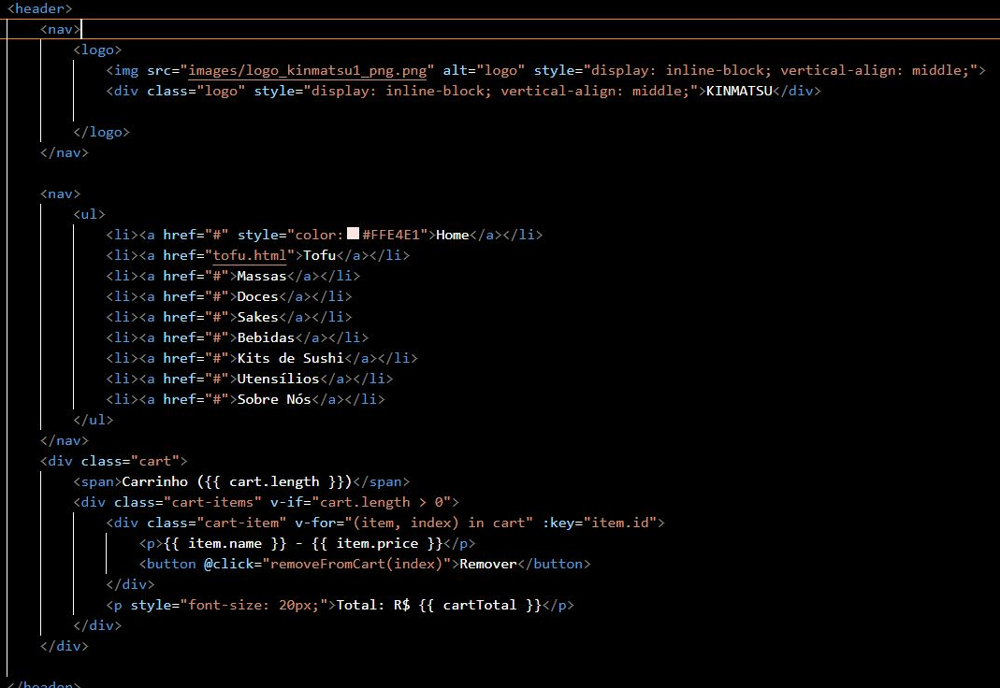
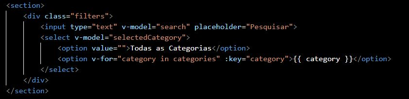
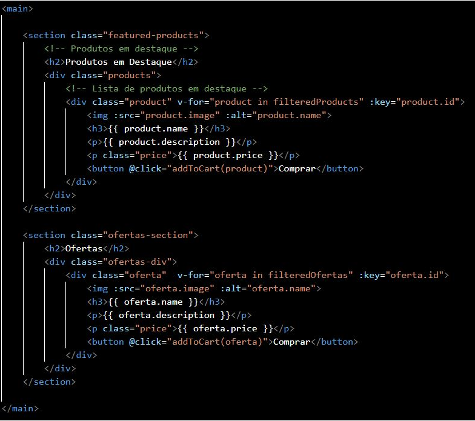
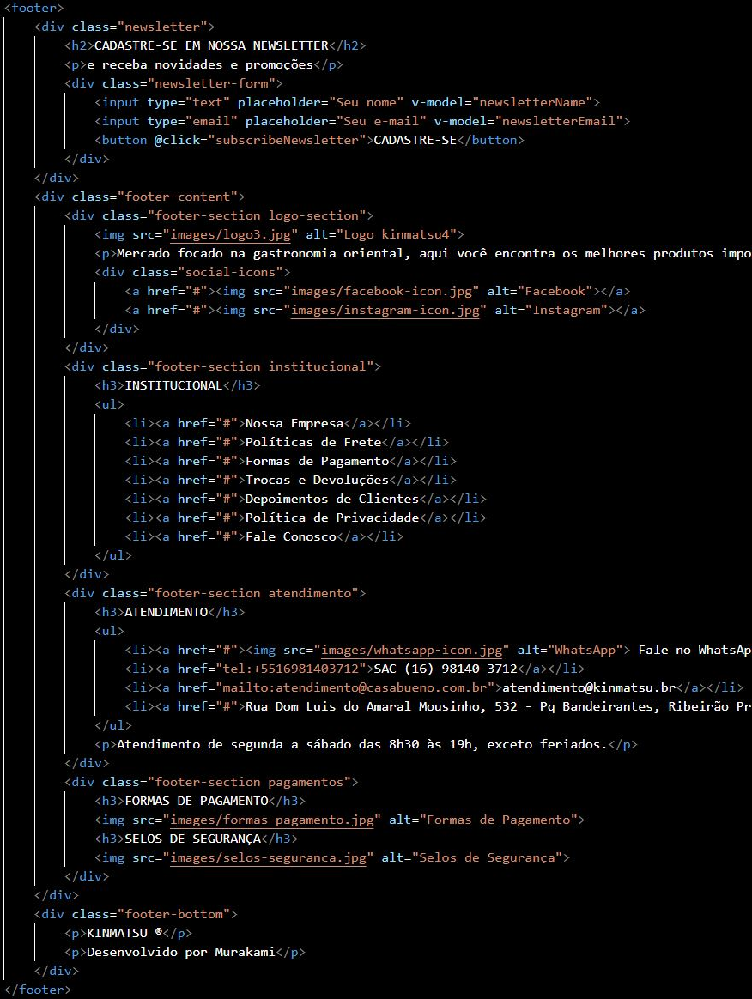
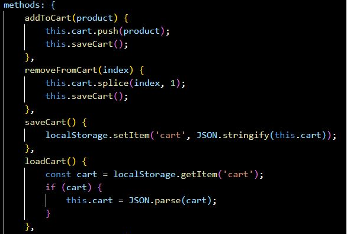
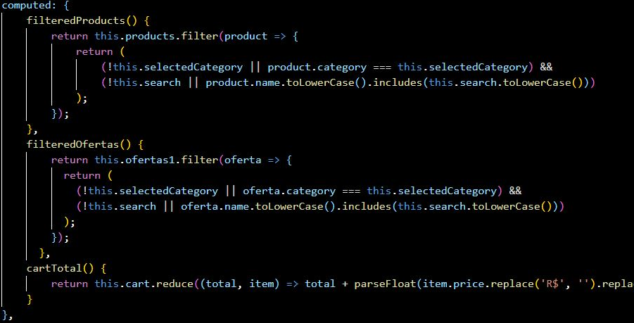
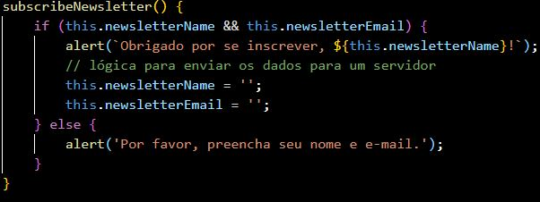
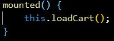
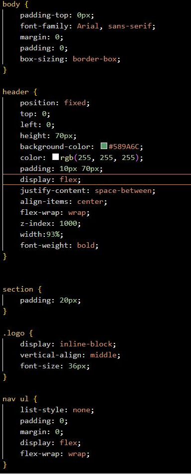

1 Introdução
A single-page dinâmica construída consiste em uma página desenvolvida com HTML, CSS, JavaScript e Vue.js. Consiste em uma aplicação de uma loja virtual especializada em produtos orientais, permitindo aos usuários explorar produtos, adicionar itens ao carrinho e se inscrever na newsletter. Este documento detalha os principais aspectos da página, suas funcionalidades e o funcionamento interno do código.
2 Estrutura da Página (HTML)
O arquivo `home.html` define a estrutura básica da página, utilizando as seguintes seções:
2.1 Cabeçalho (Header)
No cabeçalho (header) da página, à esquerda, o logotipo da loja reforça a identidade visual, enquanto a barra de navegação inclui links para categorias de produtos como "Home", "Tofu", "Doces" e "Sobre Nós", com o link da página atual destacado em negrito.
2.2 Seção de Filtros
A seção de filtros é projetada para ajudar os usuários a encontrar produtos específicos de maneira eficiente. Localizada logo abaixo do cabeçalho, essa seção permite que os usuários filtrem os produtos exibidos de acordo com suas preferências.
A seção de filtros inclui um campo de pesquisa e um menu suspenso de categorias. O campo de pesquisa permite que os usuários digitem palavras-chave para localizar produtos específicos. Por exemplo, ao digitar "tofu", apenas os produtos relacionados ao tofu serão exibidos.
O menu suspenso de categorias oferece uma seleção de opções, como "Molhos", "Massas", etc. Isso permite que os usuários filtrem os produtos com base na categoria desejada. Se um usuário selecionar "Molhos", apenas os produtos desta categoria serão mostrados.
2.3 Conteúdo Principal (Main)
O conteúdo principal (main) é onde os produtos são exibidos, proporcionando aos usuários uma visão clara e organizada dos itens disponíveis para compra. Esta seção é dividida em duas partes principais: "Produtos em Destaque" e "Ofertas".
A seção "Produtos em Destaque" apresenta uma seleção de itens destacados pela loja. Cada produto é exibido em um cartão individual que inclui uma imagem, o nome, a descrição, o preço e um botão "Comprar". Isso permite que os usuários visualizem facilmente os detalhes importantes e adicionem os produtos ao carrinho com um clique.
A seção "Ofertas" é dedicada a produtos com preços promocionais. Assim como na seção de produtos em destaque, cada item em oferta é exibido em um cartão que inclui todos os detalhes necessários para que os usuários possam fazer uma compra informada. Isso facilita a identificação de boas oportunidades de compra.
2.4 Rodapé (Footer)
O rodapé (footer) da página é uma seção que oferece informações adicionais e opções de navegação aos usuários. Esta seção está dividida em várias partes, cada uma atendendo a uma necessidade específica dos visitantes.
Primeiramente, a seção de newsletter convida os usuários a se inscreverem para receber atualizações e promoções. Esta parte do rodapé permite que os usuários insiram seu nome e e-mail para inscrição. Uma notificação de sucesso ou não é enviada ao apertar o botão de envio.
3 Funcionalidades e Interatividade (Vue.js)
O arquivo `app.js` utiliza o framework Vue.js para tornar a página interativa e dinâmica:
3.1 Gerenciamento de Estado
O gerenciamento de estado é realizado de maneira a garantir uma experiência de usuário fluida e interativa.
A aplicação utiliza o Vue.js para controlar e gerenciar o estado dos dados exibidos na interface do usuário. O objeto data no componente Vue armazena todas as informações necessárias, como produtos, ofertas, itens no carrinho, categorias selecionadas e detalhes da newsletter. Esses dados são vinculados à interface do usuário usando a sintaxe de template do Vue, permitindo que qualquer mudança no estado dos dados seja automaticamente refletida na interface.
3.2 Manipulação do Carrinho de Compras
Outra aplicação é no carrinho de compras. Quando um produto é adicionado ao carrinho, a função `addToCart(product)` é chamada, que adiciona o produto ao array `cart`. Esse array é então salvo no `localStorage` para que as informações do carrinho sejam persistidas mesmo se o usuário recarregar a página ou fechar o navegador.
A manipulação do carrinho é gerenciada de forma dinâmica com Vue.js. Quando um usuário adiciona um produto ao carrinho, o item é inserido no array `cart`. Esse array é então salvo no `localStorage`, o que garante que o carrinho permaneça intacto mesmo quando o usuário atualiza a página ou volta ao site mais tarde.
Da mesma forma, quando um usuário remove um item do carrinho, ele é removido do array `cart` e o carrinho é atualizado tanto na interface quanto no `localStorage`. Isso proporciona uma experiência de usuário mais consistente e evita que o usuário perca o progresso de sua compra.
Visualmente, o carrinho exibe o número total de itens atualmente no carrinho, juntamente com uma lista detalhada dos produtos, incluindo seus nomes, preços e uma opção para removê-los individualmente. Além disso, o valor total do carrinho é calculado dinamicamente com base nos preços dos produtos.
3.3 Filtros Dinâmicos de Produtos
O filtro usa Vue.js para exibir dinamicamente os produtos conforme o usuário interage com os filtros. Quando o usuário digita na caixa de pesquisa ou seleciona uma categoria, o Vue.js reage a essas mudanças e atualiza a lista de produtos exibidos na página em tempo real, sem a necessidade de recarregar a página. Isso proporciona que os usuários encontrem facilmente os produtos desejados.
3.4 Validação de Formulários
Essa funcionalidade é implementada com Vue.js para validar os campos do formulário. Após o cadastro, uma mensagem de agradecimento é exibida ao usuário.
3.5 Recuperação do Estado do Carrinho
O método `mounted` é utilizado para carregar o estado atual do carrinho do `localStorage` assim que a aplicação é iniciada. Isso garante que os produtos previamente adicionados ao carrinho sejam recuperados e exibidos corretamente na interface do usuário, mantendo a consistência entre as sessões de navegação.
4 CSS (Cascading Style Sheets)
O CSS (Cascading Style Sheets) desempenha um papel no design de uma página web, pois controla a apresentação visual dos elementos HTML. Ele permite definir estilos como cores, fontes, espaçamento, layout e muito mais, garantindo uma experiência visualmente atraente e consistente para os usuários.
